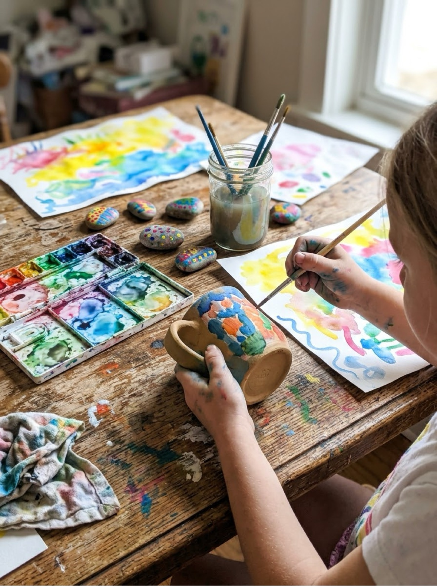

Painting Ideas Simple Projects for Babies, Kids, Beginners & Family Craft Time
Painting ideas for every age and every mess tolerance: taste-safe finger painting for babies, face painting designs for parties, gentle watercolour projects for beginners, and pottery painting the whole family can sit down to. Pick a project, check the short supply list, and print the free practice sheet that goes with it.
Last updated: October 21, 2026

Quick Answer
This hub collects all of our painting projects in one place: finger painting for the youngest artists, easy face painting ideas for kids 3+, watercolour painting ideas for beginners, and pottery painting ideas for family craft sessions — each with step-by-step instructions and a free printable practice sheet. Start with whichever project matches your child's age and your energy for cleanup.
At a Glance
- Ages: 6 months (bag painting, supervised) through adult family projects
- Projects: finger painting, face painting, watercolour, pottery painting, paint by numbers
- Printables: a free practice sheet or planner on every project page
- Cost: ideas and printables are free — no signup, no email
🎨 The Painting Projects
- 👆 Finger Painting — Edible Recipes & Ideas by Age
- 🦋 Easy Face Painting Ideas — 8 Step-by-Step Designs
- 🌈 Watercolour Painting Ideas — Techniques & Beginner Projects
- 🏺 Pottery Painting Ideas — Mugs, Plates, Pots & Tiles
- 🔢 Paint by Numbers — Printable Sets for Kids
👶 Painting by Age
🎯 How to Choose the Right Painting Project
The right project is the one that fits the painter, the clock, and your cleanup energy — in that order. For a child under three, the paint itself is the project: spreading, squishing and mixing colours is the whole point, and finger painting is built for exactly that stage. There is no finished picture to aim for, which means there is no way to do it wrong.
From about age three, children start wanting the paint to become something — a butterfly on a cheek, a rainbow on paper. That is when face painting and guided projects land well: short steps, a clear result, and a lot of showing off afterwards. Keep designs simple and sessions short, and let them pick the design; choosing is half the fun at this age.
Older kids and beginners do best with projects that teach one real technique at a time. Watercolour is forgiving that way — a sunset wash teaches how paint and water behave, and it looks impressive even when it wobbles. Pottery painting suits a slower afternoon: one blank mug, a planned design, and something useful at the end of it. If you are painting with several ages at once, pottery and watercolour both scale — toddlers can sponge and splatter their own piece alongside a big kid's careful design.
🧰 The Five-Minute Setup That Saves Every Session
Most painting disasters are setup problems, not kid problems. Before any paint comes out: cover the surface or put everything on a tray, tape the paper down so it cannot wander, pour small amounts of paint into a muffin tin or palette instead of handing over whole bottles, and set out a damp cloth and a cup of water within the painter's reach. Dress everyone in a paint shirt — one old shirt that lives with the art supplies and absorbs every stain guilt-free.
End the session the same way every time and it becomes automatic: lids on, brushes rinsed and laid flat, artwork moved to its drying spot, hands washed. A drying spot matters more than you would think — pick a shelf, tray or stretch of counter where wet paintings can sit untouched for a few hours, and half of all paint-related tears disappear.
🛒 What You Actually Need to Start
You do not need a craft-store haul. A pan watercolour set, two or three brushes in different sizes, thick paper, and a towel cover most of the projects in this section. Finger painting needs nothing but the paint itself. The two places worth buying the right thing are paper — cheap thin paper buckles and tears under wet paint, and children blame themselves for it — and face paint, which must be cosmetic-grade and made for skin. Everything else can be borrowed from the kitchen: muffin tins as palettes, old shirts as smocks, jars as water cups.
🎨 More Fun for Moms & Kids
👆 Finger Painting
Taste-safe recipes and activities by stage, from bag painting for babies to fingerprint art for preschoolers. Start finger painting.
🦋 Easy Face Painting Ideas
Eight designs in the order you actually paint them — base, shapes, details — plus the safety basics. See the designs.
🌈 Watercolour Painting Ideas
Four starter techniques and eight projects that work, including the classic sunset wash. Try watercolour.
🏺 Pottery Painting Ideas
Fifteen designs for mugs, plates, plant pots and tiles, with an honest guide to paints and food safety. Plan a pottery project.
🔢 Paint by Numbers
Printable paint by numbers sets — all the painting, none of the blank-page panic. Browse the sets.
✂️ Crafts for Kids
Paper crafts, seasonal projects and more making ideas in the crafts section. Browse crafts.
❓ Frequently Asked Questions
What age can kids start painting?
Babies can start with paint sealed inside a zip-top bag taped flat to a highchair tray — all the squishing, none of the eating. Toddlers graduate to finger painting with taste-safe paint, preschoolers handle brushes and sponges with a little setup help, and by five or six most kids can follow simple step-by-step projects like face painting designs and watercolour washes. Every project page in this collection of painting ideas says which age it suits.
What paint is safest for toddlers?
For toddlers who still put hands in mouths, use taste-safe finger paint made from kitchen ingredients, or a store-bought paint labelled non-toxic and made for ages 2+. Non-toxic does not mean edible — it means small accidental tastes are not expected to cause harm — so supervise, and wipe hands when you are done. Our finger painting page has two homemade recipes with exact ratios.
Do I need a big art kit to start?
No. A basic watercolour pan set, a few brushes, thick paper, a cup of water and an old towel will carry you through most of the projects here. Pottery painting needs a blank piece and acrylic or ceramic paint; face painting needs proper cosmetic-grade face paint, which is the one place not to substitute — craft paint never goes on skin. Each page lists exactly what it uses, and none of the lists are long.
How do I keep painting from taking over the house?
Contain it. Paint on a tray or a washable mat, tape the paper down, keep a damp cloth within reach, and dress painters in one dedicated paint shirt. Short sessions help too — fifteen good minutes beat an hour that unravels. Every project page here includes its own setup and cleanup notes, because cleanup is half the project with kids.
Are the painting printables really free?
Yes. The practice charts, design planners and practice sheets in this section are free to download and print at home — no signup, no account, no email. Print as many copies as your own family needs.